Introduzione all’RNASeq
Introduzione all’analisi RNASeq in R
Dipartimento di Biomedicina e Prevenzione
Marco Chiapello, Revelo Datalab
November 2024
Three Stages of Transcriptomic Analysis
- Primary Analysis:
- Focuses on processing raw sequencing data.
- Key steps:
- Quality control (QC)
- Read alignment/mapping
- Transcript quantification
- Secondary Analysis:
- Extracts meaningful information from processed data.
- Key steps:
- Differential gene expression analysis
- Clustering and classification
- Tertiary Analysis:
- Integrates transcriptomic data with other biological knowledge.
- Key steps:
- Pathway and network analysis
- Validation of findings
- Hypothesis generation and further experimentation
Sample Preparation
Sample Preparation
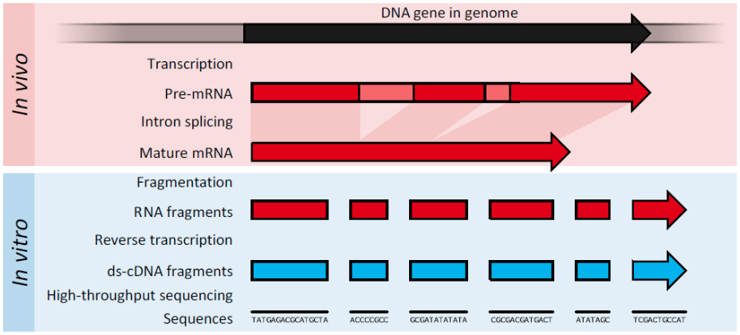
RNA Extraction
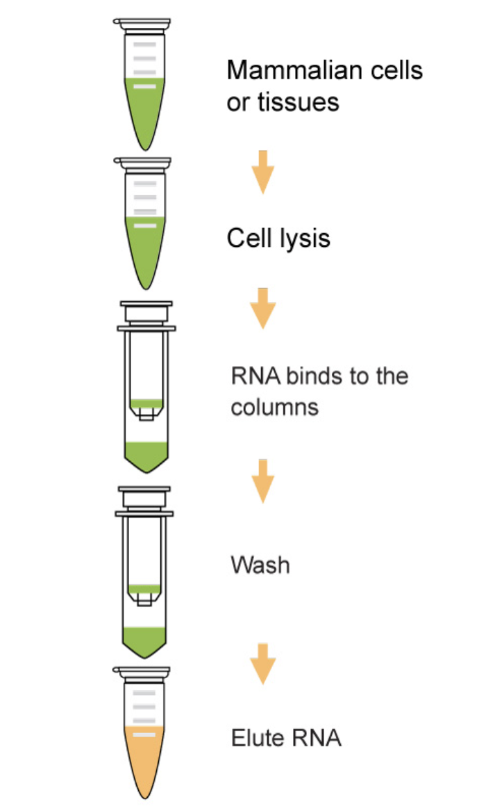
- Goals:
- Lyse cells/tissues
- Remove contaminants (DNA, proteins, lipids)
- Preserve RNA integrity
- Methods:
- Phenol-chloroform extraction
- Column-based kits (silica membrane)
Importance of High-Quality RNA
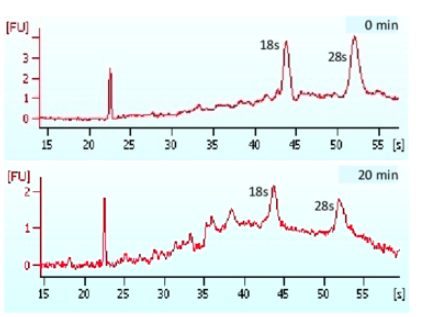
- High-quality RNA is the cornerstone of successful RNA-Seq.
- Degraded or contaminated RNA can lead to:
- Inaccurate gene expression measurements
- Misleading conclusions
- Wasted time and resources
- Prevent RNA degradation:
- Use RNase-free reagents and equipment.
- Store RNA at -80°C.
- Minimize freeze-thaw cycles.
Enrich a specific type of RNA
mRNA
rRNAs and tRNAs (involved in mRNA translation)
Small nuclear RNAs (involved in splicing)
Small nucleolar RNAs (involved in the modification of rRNAs)
microRNA (regulate gene expression at the posttranscriptional level)
Long noncoding RNAs (chromatin remodelling, transcriptional control and posttranscriptional processing)
Two options for mRNA enrichment
mRNA enrichment – Selectively enriching for poly(A)-tailed transcripts
RNA depletion – Selectively depleting abundant/off-target transcripts
RNA Fragmentation
Important
A sequencing library is essentially a pool of RNA fragments with adapters attached
- Why?
- NGS platform compatibility
- Increased library complexity
- Methods:
- Enzymatic digestion (e.g., RNase III)
- Mechanical shearing (e.g., sonication)
Attachment of adapters
Adapters are a short, chemically-synthesised oligonucleotide that can be attached to the ends of DNA molecules (cDNA Synthesis: RNA to DNA)
Act as barcodes to identify where each nucleotide was originally located
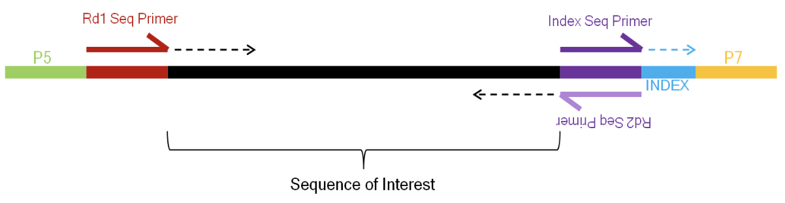
Library quantification
- Why quantify?
- Optimal sequencing results
- Determine loading concentration
- Ensure even coverage
- Methods:
- Fluorometric methods (e.g., Qubit)
- qPCR
- Capillary electrophoresis (e.g., Bioanalyzer)
How many samples do I need?
Power analysis
Power analysis
- Type I error: controlled by the α value. Often set to 0.01 (1%) or 0.001 (0.1%) in RNA-seq experiments.
Power analysis
Type I error: controlled by the α value. Often set to 0.01 (1%) or 0.001 (0.1%) in RNA-seq experiments.
Type II error: controlled by the β value. (1−β) will give you the power of your analysis. Should be set to 70 or 80% to detect 70 or 80% of the differentially expressed genes. The number of biological replicates might be hard to reach in practice for RNA-seq experiments.
Power analysis
Type I error: controlled by the α value. Often set to 0.01 (1%) or 0.001 (0.1%) in RNA-seq experiments.
Type II error: controlled by the β value. (1−β) will give you the power of your analysis. Should be set to 70 or 80% to detect 70 or 80% of the differentially expressed genes. The number of biological replicates might be hard to reach in practice for RNA-seq experiments.
Effect size: this is a parameter you will set. For instance, if you want to investigate genes that differ between treatments with a difference of their mean of 2 then the effect size is equal to 2.
Power analysis
Type I error: controlled by the α value. Often set to 0.01 (1%) or 0.001 (0.1%) in RNA-seq experiments.
Type II error: controlled by the β value. (1−β) will give you the power of your analysis. Should be set to 70 or 80% to detect 70 or 80% of the differentially expressed genes. The number of biological replicates might be hard to reach in practice for RNA-seq experiments.
Effect size: this is a parameter you will set. For instance, if you want to investigate genes that differ between treatments with a difference of their mean of 2 then the effect size is equal to 2.
Sample size: the quantity you want to calculate.
Let’s say we want:
- Type I error of 5%. (α=0.05)
- Type II error of 0.2. (Power=1−β=0.8)
- Effect size of 2. (d=2)
Let’s say we want:
- Effect size of 1. (d=1)
Power analysis for RNA-seq
General Considerations
RNA-seq experiments often suffer from a low statistical power
General Considerations
RNA-seq experiments often suffer from a low statistical power
Low power can lead to a lack of reproducibility of the research findings
General Considerations
RNA-seq experiments often suffer from a low statistical power
Low power can lead to a lack of reproducibility of the research findings
The number of replicates is one of the critical parameter related to the power of an analysis
Replicates
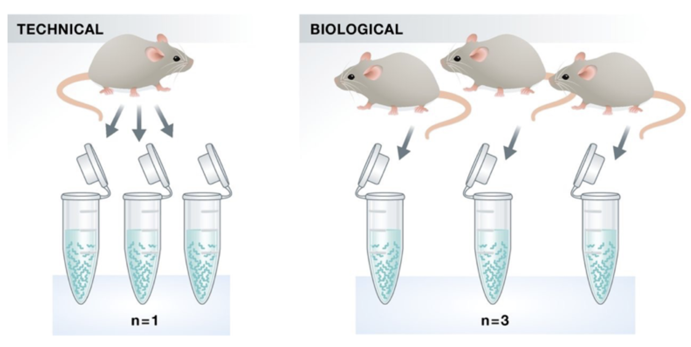
Klaus B., EMBO J (2015) 34: 2727-2730
Do we need technical replicates?
No
No
Important
With the current RNA-Seq technologies, technical variation is much lower than biological variation and technical replicates are unneccessary
Do we need biological replicates?
YES
YES
Important
Biological replicates are absolutely essential for differential expression analysis
YES
Important
For differential expression analysis, the more biological replicates, the better the estimates of biological variation and the more precise our estimates of the mean expression levels
Biological replicates are of greater importance than sequencing depth
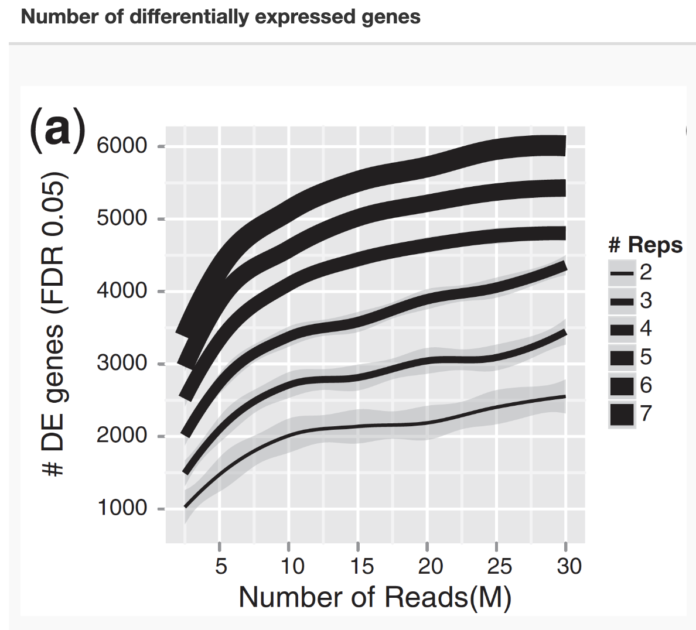
Introduction to RNA Sequencing
(Primary analysis)
The central dogma
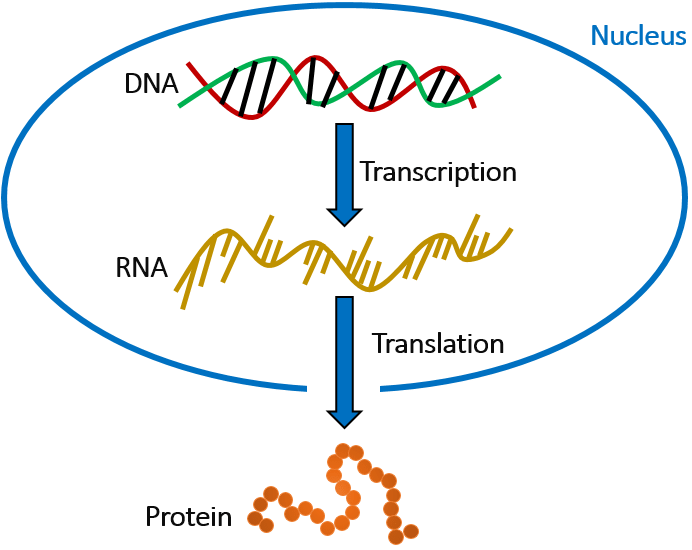
- DNA: The blueprint of genetic information
- RNA: The messenger carrying genetic instructions
- Protein: The functional molecules in cells
Why Study RNA?
Why Study RNA?
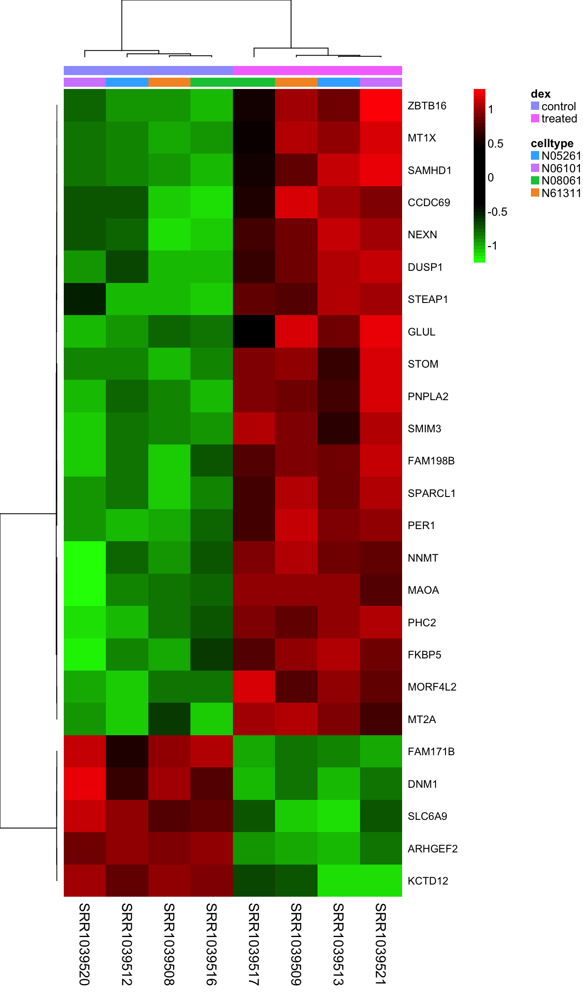
- Dynamic reflection of cellular activity: Unlike DNA, which is relatively static, RNA levels change rapidly in response to internal and external stimuli.
- Provides a snapshot of what genes are actively being expressed at a specific time.
- Understanding gene regulation: Studying RNA helps us understand how genes are turned on or off, and to what extent, in different conditions.
Why Study RNA?
- Insights into cellular processes: RNA plays diverse roles in many cellular processes, including:
- Protein synthesis (mRNA)
- Gene regulation (microRNAs, long non-coding RNAs)
- Catalysis (ribozymes)
- Disease biomarkers and drug targets: Changes in RNA expression can be indicative of disease states, making RNA a valuable source of biomarkers for diagnosis and prognosis.
The Power of RNA-Seq
- Unbiased & Comprehensive:
- Discovers novel transcripts
- Not limited to known genes
- Higher Sensitivity:
- Detects rare transcripts
- Wider dynamic range
- Alternative Splicing:
- Identifies and quantifies isoforms
- Mutation Detection:
- SNPs, indels, fusion genes
- Non-Coding RNAs:
- Studies microRNAs, lncRNAs, etc.
A Brief History of Sequencing
First generation NGS
Sanger Sequencing
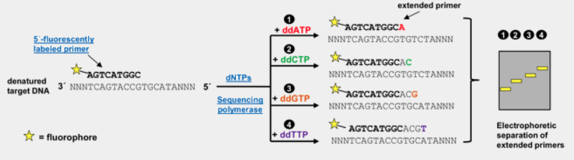
Sanger Sequencing
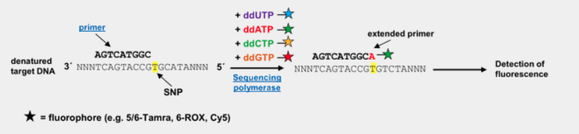
Sanger Sequencing
Advantages
Gold standard method for accurate detection of single nucleotide variants and small insertions/deletions
Cost effective where single samples need to be tested very urgently
Less reliant on computational tools than NGS
Longer fragments (up to approximately 1000bp) can be sequenced than in short read NGS
Limitations
Limited throughput
Not cost effective for sequencing many genes in parallel
Can require a larger amount of input DNA than NGS
Sanger methods can only sequence short pieces of DNA–about 300 to 1000 base pairs.
The quality of a Sanger sequence is often not very good in the first 15 to 40 bases because that is where the primer binds.
Sequence quality degrades after 700 to 900 bases
Sanger Sequencing
Second generation NGS
Important
Second-generation NGS machines immediately began to drive the ‘genomics revolution’ by massively increased throughput by parallelizing many reactions
Second generation NGS
Second-generation sequencing platforms:
SOLiD: Sequencing by Oligonucleotide Ligation and Detection
454 GS FLX+: It uses pyrosequencing chemistry
NextSeq 550Dx: Sequence by synthesis
Sequence by Ligation
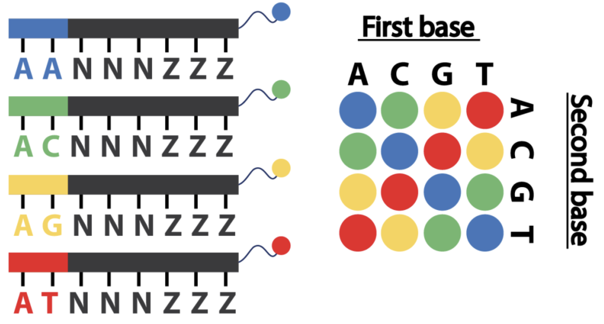
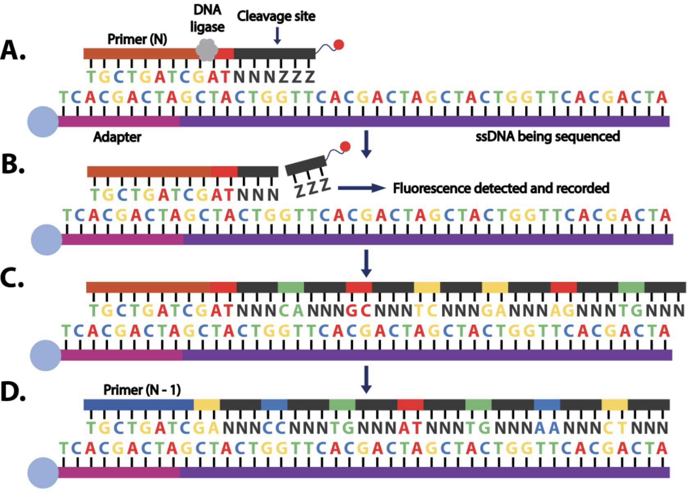
Considered to be one of the most accurate second-generation sequencing technologies
it can take up to seven days to complete a single run and its short read length of 35 bp
Thermo Fisher Scientific shut down all SOLiD sequencing platforms in 2016
Pyrosequencing
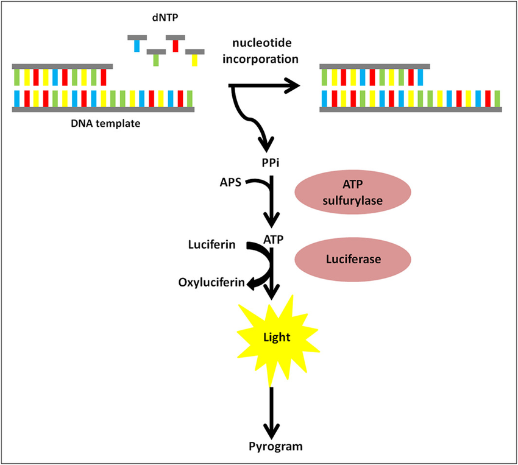
Large read lenght generation
High reagent cost
High error rate for homopolymers
Sequence by synthesis
Sequence by synthesis - History
1997: Evolution of a Novel Approach to Sequencing
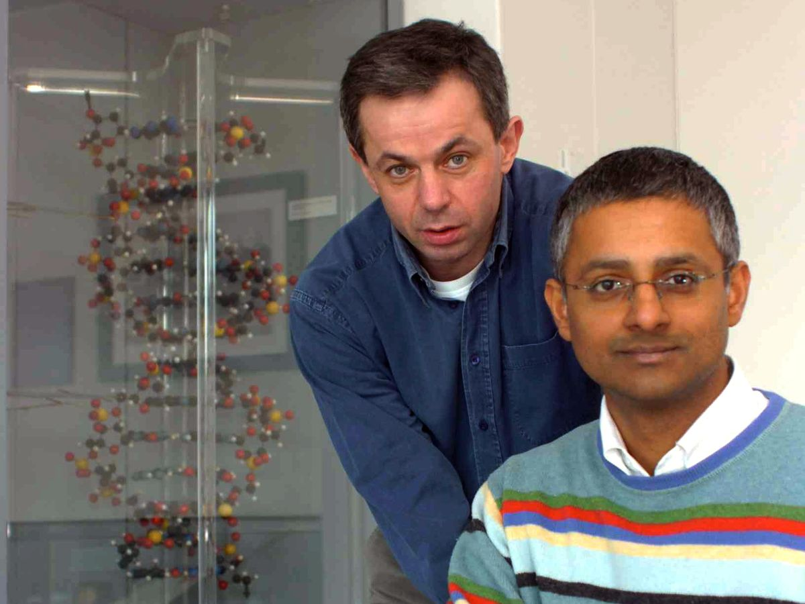
Shankar Balasubramanian and David Klenerman
Sequence by synthesis - History
1998: Formation of Solexa
Sequence by synthesis - History
2004: Molecular Clustering Technology Integration
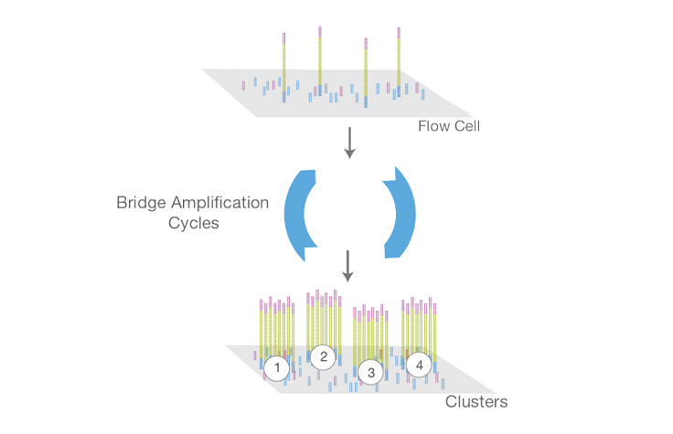
Cluster generation (also known as “bridge amplification”)
Sequence by synthesis - History
2005: phiX-174 Genome Sequencing
2005: Integration of Lynx Therapeutics
2007: Illumina Acquires Solexa
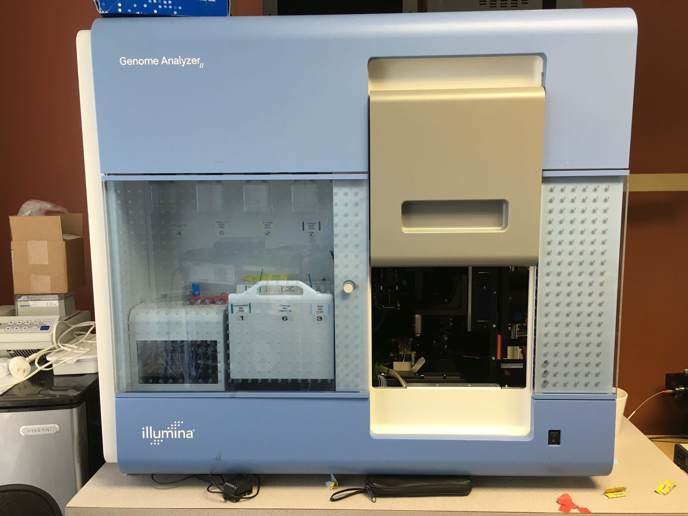
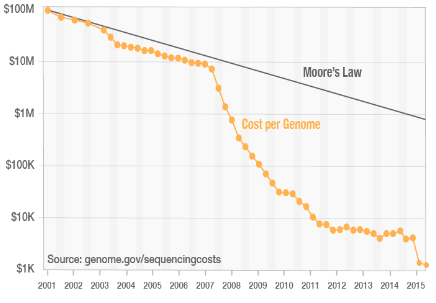
Sequence by synthesis - Process
Third generation NGS
Important
Third-generation methods allow direct sequencing of single DNA molecules
Third generation NGS
Third-generation NGS platforms:
Single-molecule real-time sequencing
Nanopore sequencing
SMRS
Nanopore sequencing
Single-Ended vs. Paired-End
Choosing Your Sequencing Strategy

- Single-end sequencing:
- One read per fragment
- Simpler, cost-effective
- Suitable for gene expression profiling
- Paired-end sequencing:
- Two reads per fragment
- More information, improved accuracy
- Useful for genome assembly, variant detection, isoform identification
- Choice depends on:
- Research question
- Budget
- Desired accuracy
Single-Ended vs. Paired-End
| Trade-off | Single-End Sequencing | Paired-End Sequencing |
|---|---|---|
| Cost | Lower | Higher |
| Information | Less | More |
| Simplicity | Simpler | More Complex |
| Accuracy | Lower | Higher |
| Sequencing Depth | Higher | Potentially Lower |
| Read Length | Shorter | Longer (effective) |
| Ideal Applications | Gene expression, small RNA-Seq | Genome assembly, variant calling, isoform identification |
Sequencing Depth
Sequencing Depth: Finding the Right Balance
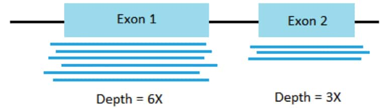
- What it is: The average number of times each base in the genome (or transcriptome) is sequenced.
- Why it matters:
- Sensitivity: Higher depth increases the chance of detecting rare transcripts or variants.
- Accuracy: Higher depth improves the accuracy of gene expression quantification and variant calling.
- Factors to consider:
- Research goals: Higher depth is needed for detecting rare events or subtle changes.
- Genome size and complexity: Larger genomes require higher depth for adequate coverage.
- Budget: Higher depth increases sequencing costs.
- Typical ranges:
- RNA-Seq for gene expression: 10-30 million reads per sample
- RNA-Seq for isoform detection: 30-60 million reads per sample
- Variant calling: 30-50x coverage for whole-genome sequencing
Transcriptome Coverage
Transcriptome Coverage: Capturing the Full Picture
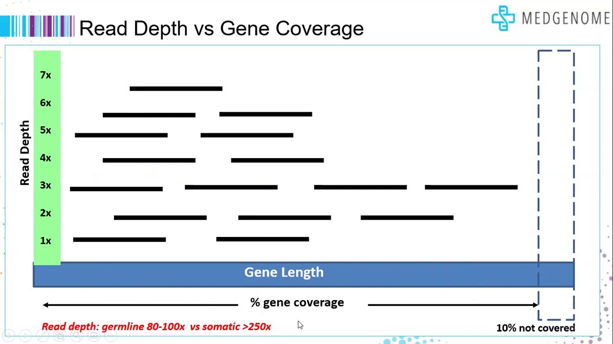
- What it is: The extent to which the sequencing reads represent the entire transcriptome.
- Why it matters:
- Completeness: High coverage ensures that all expressed transcripts are captured, including rare and low-abundance transcripts.
- Accuracy: Adequate coverage is needed for accurate quantification of gene expression levels.
- Discovery: High coverage increases the chances of identifying novel transcripts and isoforms.
- Factors influencing coverage:
- Sequencing depth: Higher depth generally leads to better coverage.
- Library complexity: A diverse library with a wide range of fragment sizes improves coverage.
- RNA integrity: High-quality RNA ensures that all transcripts are represented in the library.
- Sequencing technology: Different platforms have different read lengths and biases, which can affect coverage.
Emerging Trends and Future Directions
Single-Cell RNA Sequencing
Zooming In: Analyze gene expression in individual cells
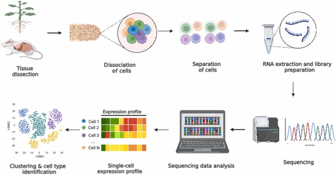
Single-Cell RNA Sequencing
scRNA-Seq: advantages in biological research
- Cellular Heterogeneity: Identify and characterize different cell types within a complex tissue or population.
- Discover new cell subtypes and rare cell populations.
- Understand the functional diversity of cells.
- Developmental Trajectories: Trace cell lineages and reconstruct developmental pathways.
- Study cell differentiation and fate decisions.
- Identify key genes and regulatory networks involved in development.
Single-Cell RNA Sequencing
scRNA-Seq: advantages in biological research
- Disease Mechanisms: Investigate the cellular basis of disease.
- Identify disease-associated cell types and gene expression changes.
- Study the response of individual cells to drugs or treatments.
Important
scRNA-seq represents a powerful tool for dissecting the complexities of gene expression and cellular heterogeneity across various biological contexts
Spatial Transcriptomics
Spatial Transcriptomics: mapping gene expression in context
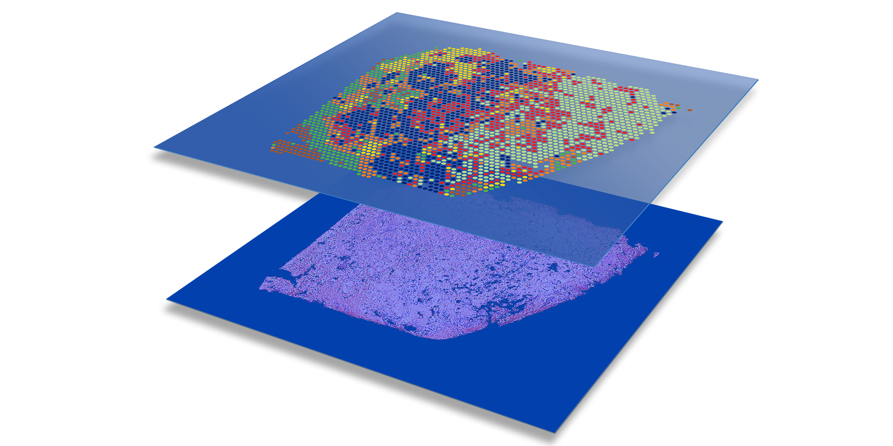
- Bridges histology and genomics: Combines traditional tissue imaging with high-throughput RNA sequencing.
- Preserves spatial context: Maps gene expression while retaining spatial information, unlike traditional scRNA-seq.
- Enables:
- Visualization of gene expression patterns within tissues.
- Quantitative analysis of transcriptomes in a spatial context.
- Applications:
- Understanding tissue organization and cellular interactions.
- Investigating developmental processes (organogenesis).
- Studying disease progression and heterogeneity.
Spatial Transcriptomics
Spatial Transcriptomics: from technology to discovery
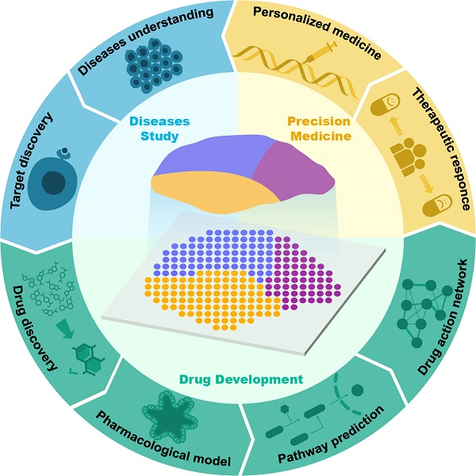
- Applications:
- Tissue heterogeneity: Studying complex tissues like the cochlea. (Tisi, 2023)
- Disease mechanisms: Uncovering cellular dynamics in diseases like Alzheimer’s. (Chen et al., 2020)
- Data analysis:
- Dimension reduction, deconvolution, and integration with histological images.
- Specialized tools for cell type deconvolution. (Cable et al., 2021)
Integration of RNA-Seq with other omics data
Beyond RNA: integrating with other omics data
- The Power of Integration: Combining RNA-Seq with other omics data provides a more complete picture of cellular processes.
- Metabolomics: Correlate gene expression with metabolic pathways and identify key metabolites.
- Chromatin accessibility (ATAC-seq): Link gene expression changes to alterations in chromatin structure.
- Other omics layers: Integrate with genomics, proteomics, and epigenomics for a systems-level understanding.
- Key Findings:
- Limited overlap between DEGs and chromatin accessibility changes (~10%) (Malvi et al., 2022).
- Highlights the complexity of gene regulation beyond chromatin state. (Miao et al., 2021)
Integration of RNA-Seq with other omics data
Unlocking biological insights through data integration
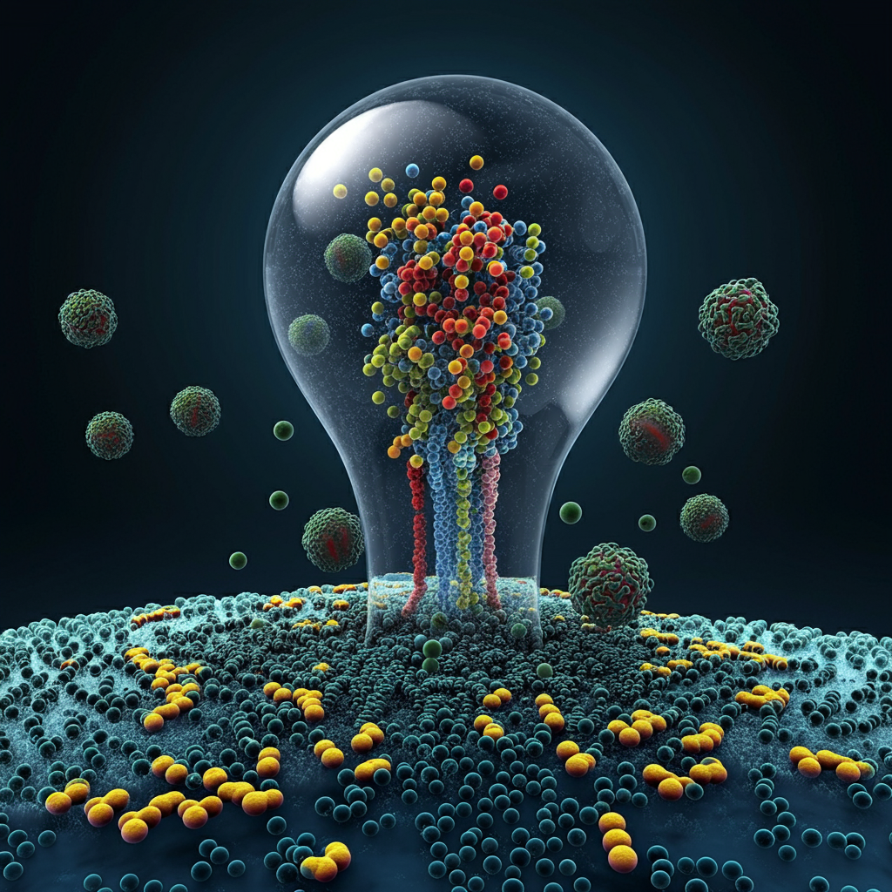
- Applications:
- Identifying key pathways: Integration of RNA-seq and metabolomics reveals regulated pathways in liver metabolism. (Zhang et al., 2020)
- Disease biomarkers: Uncovering disease-specific biomarkers in NAFLD using RNA-seq and metabolomics. (Ji et al., 2022)
- Tools and Techniques:
- Machine learning: rSeqTU for predicting transcription units and integrating with metagenomics and metabolomics. (Hou et al., 2022)
- Statistical analysis: DESeq2 for integrating RNA-seq and ChIP-seq data. (Niu et al., 2019)
- Single-cell multi-omics: Combining scRNA-seq with lipidomics and metabolomics to study cellular heterogeneity. (Cao et al., 2020)
Domande?